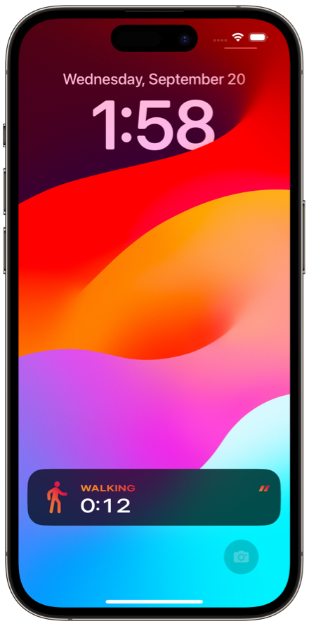
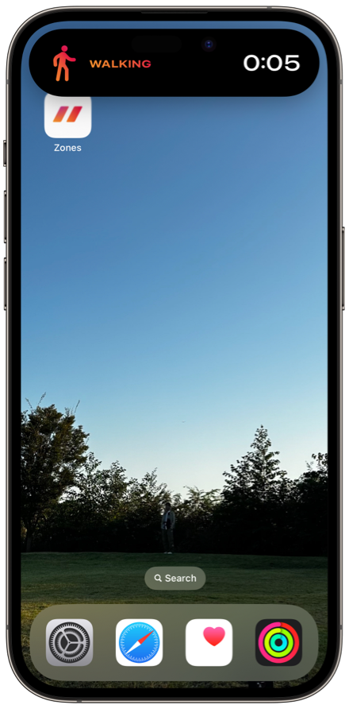
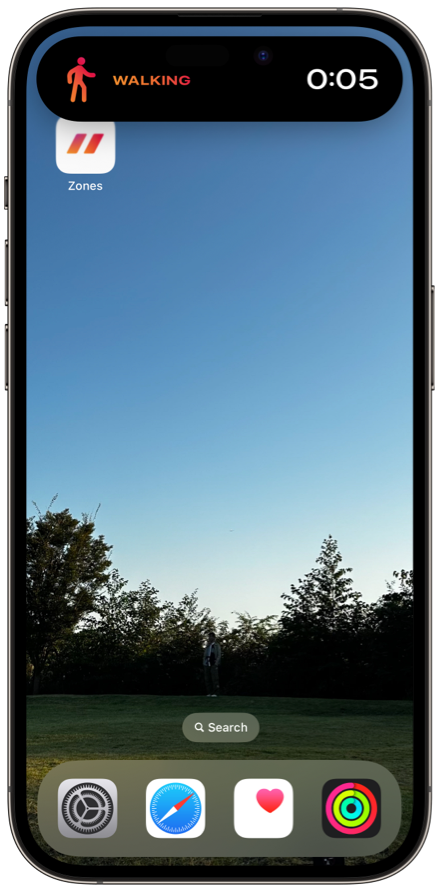

ヘルプ
ワークアウトのミラーリング

Apple WatchのワークアウトをペアリングしたiPhoneに直接ミラーリングできます。
iPhoneを見ながら行えるトレッドミルやサイクリングなどのワークアウトでご利用ください。
必要な環境
- Zones v 7.0 以上
- iOS 17 以上
- watchOS 10 以上
使用方法
- Apple Watchでワークアウトを開始します。
- 1ページ目にある「ミラー」ボタンをタップします。

- iPhoneのZoneアプリ「最近」のタブに、「実行中のワークアウト」が表示されます。
- 「実行中のワークアウト」をタップすると、ミラーリングの詳細画面が表示されます。
- ワークアウトを終了すると、ミラーも自動的に停止します。
任意にミラーを停止するには、「ミラー中」ボタンをタップします。
ライブアクティビティ

 

ミラーリング中は、ライブアクティビティが表示されます。
スワイプすると、削除することができます。
ライブアクティビティが表示されないとき
利用の権限を確認する
- iPhoneで「設定」アプリを開く
- "Zones"をタップ
- "ライブアクティビティ"をオン
長時間経過した
ライブアクティビティの表示時間には制限があります。
8時間以上経過すると、システムは自動的にライブアクティビティを終了します。
参考情報: Displaying live data with Live Activities > Understand constraints
再度ライブアクティビティを表示するには、ミラーの停止、開始を行います。